General
Work have been done to make sure this release will work with Seam 2.1 as a Technology Preview; i.e. components.xml editor supports 2.1 schemas.
Generate Entities wizard will only work with Seam 2.1.0.SP1 or use the patch available in the related bug in jira for Seam 2.1.0.GA

Seam 2.0 is no longer a technology preview, since it is fully supported via the Feature Pack (FP) to JBoss EAP.
Editors
An editor for pages.xml have been added for visualizing and edit the flow defined in pages.xml (single page.xml will be added later)
There are three modes: Graphical, Tree and plain source.
Graphical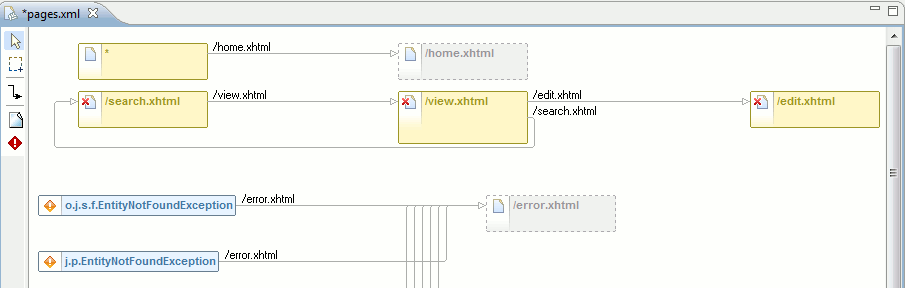
Yellow, full line: Represent a <page> element.
Yellow, dashed line: Represent a page that is being navigated to but does not exist in pages.xml
Red box: <exception> element
Red cross on page icon: the view-id is not found in the project.
Edit tips: Double click on a page with a concrete view-id will open up that page, selecting and single clicking on the page name allows for quick rename. The context menu also has operations that is worth trying out.
Tree

pages.xml editor has outline support for both the graphical and structural mode.
The graphical outline gives a birds-view of the layout to allow quick navigation for even big sites

The structural outline shows a tree for every element in pages.xml. You can get a quick overview plus by selecting an element the related element will be highlighted in the graphical, structural or source page.
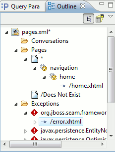
Wizards
.
Seam Generate Entities now allow you to select which catalog/schemas/tables you want to reverse engineer.

The Seam facet does no longer force creation of EAR, WAR, test, utility project. This means if you use Dynamic Web Project we will now only create a simple War project with Seam support enabled. The Seam Web Project Wizard works like before and should be used if you want the full triage project setup with everything set up from the start.
This also allow you to enable/disable Seam facets on existing projects instead of always having to use the wizard to create a new project.
The Seam wizard now warns if you create a project with first uppercase letter because of a tricky set of bugs in JBoss AS/Seam/JSF could cause deployment to fail.
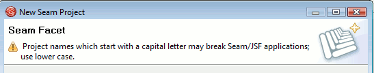
Editors
JSF code completions are now explicitly ordered by type to give more relevant completions higher priority. The current ordering is below.
- XML/JSP/HTML Tags
- Tag Attributes
- Tag Attribute Values:
- The Tag Name List for the jsfc-attribute
- Predefined Tag Attribute Values
- SEAM EL (Seam Components, Seam Component Properties, Seam Component Methods, Seam Message Components, Seam Message Component Properties, Seam Factories)
- JSF EL (Managed Beans, Managed Bean Properties, Managed Bean Methods, Constants, Resource Bundles, Resource Bundle Properties)
- WTP JSF EL
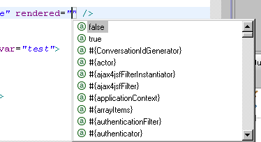
Seam code completion now also picks up @DataModelSection.
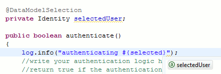
EL validation now adds warnings for unbalanced EL.
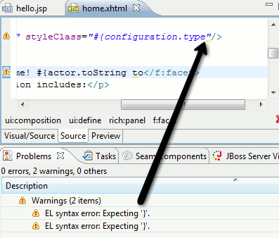
Projects
It is now possible to use the facet preferences to uprade or downgrade your projects Seam version.
The update is a "best-attempt" that will adjust the libraries, Seam facet and runtime version, but configuration files that refer to the old version will have to be manually updated.
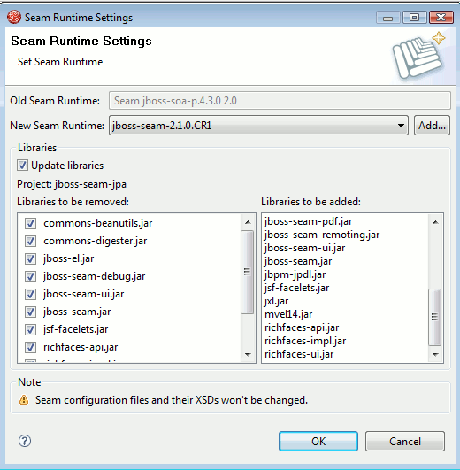
The WAR generated for EAR's is now configured to utilize Seam hot-deployment (WEB-INF/dev) similar to standalone WAR projects.
To align with seam-gen in Seam 2.1 naming of source path's, action is now hot and model is now main. The reason being that hot and main better described what the folders are used for.
The Open Web Browser action is now directly available in the Seam perspective.
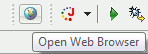
Validation
There is now a preference for setting severity of EL Syntax check to Error, Warning or Ignore.

The valdiator now checks if the runtime matches with the version referred to in components.xml, i.e. runtime is Seam 2.0, but components.xml refers to Seam 2.1
The various Seam action,form,etc. wizard now warns if the wizard will generate a class or page that already exist.

Use of project names with spaces now work since we now escape the related package names.
<framework:entity-query name="postList" ...> is now recognized as a EntityQuery component making code completion aware of it methods/attributes.
Pages Editor
Nodes in graphical pages.xml can now be directly deleted by using the Delete key.
When referring a page node you can now browse for existing pages.
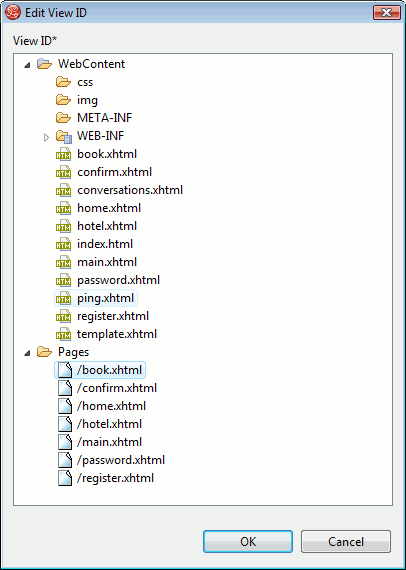
EL and Page Id's can now be navigate to directly via OpenOn's from source page.

EL references is now code completed in the source tab of pages.xml. The graphical node now also provides code completion for page id and EL expressions..

Projects
It is now possible to change the Seam parent project directly in Seam preferences. In earlier versions this was only controllable at project creation time, now it can be changed for existing projects too.
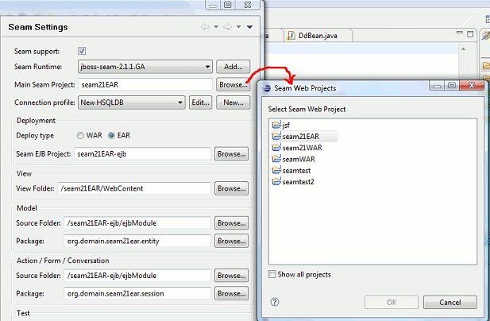
Editors
There is now a preference page for controlling visual look and behavior of the Seam pages editor.

When editing properties of elements that point to view-id's the dialog now lists existing view-id's for quick selection.
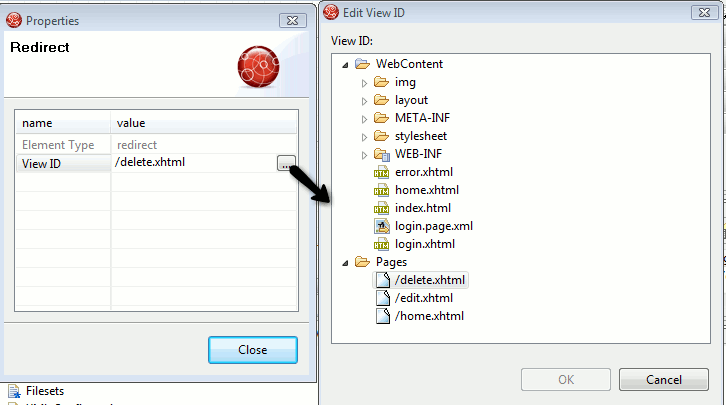
Performance
Various issues around Seam validators running too often were fixed.
We now only validate files within source path and web content, meaning temporary files or test files is not included.
Re-validation of unresolved EL expressions will only be triggered if the saved resource is a .java file or a components.xml file.
Issue where Seam validator were invoked multiple times on the same resource were fixed.
All of the above should make the time spent on validation for Seam much less prominent.
Previous releases scanned all folders of a project for Seam resources, sometime causing unwanted sideeffects (duplicate components, out of sync resources etc.).
Seam now only scans Java source directories, project classpath and WTP projects WEB-INF directory.
Besides stopping giving bad errors/warnings it should also give a decent speed up for large projects since only a smaller focused set of resources will be scanned.